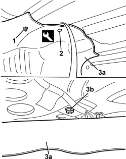
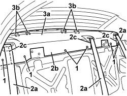

7040H80 REAR PARCEL SHELF - R.R.
- Path
- Procedures > 70 FITTINGS > 7040 BODY INTERIOR FITTINGS AND TRIM > 7040H ROOF PANEL AND PILLARS LINING > 7040H80 REAR PARCEL SHELF - R.R.
- Kind
- repair procedure (removal / refitting; the operation number is the code)
- Applies to
- all engines; all production periods
- Interactive page
- https://sloeber94.github.io/elrnDB/#/939011267
Applies to: all engines; all production periods
 Removing
Removing
 Refitting
RefittingOp. 5550D16 THIRD BRAKE LIGHT - R+R
Op. 7050A20 ONE-PIECE REAR SEAT CUSHION - R.R.
Present on the left and right sides
Op. 7040L44 REAR DOOR RUNNING BOARD (ONE), LEFT OR RIGHT - R.R.
Op. 7050A19 REAR SEAT BACKREST - R.R
Op. 7040H42 REAR PILLAR TRIM (ONE), LEFT OR RIGHT- R.R
Op. 7025B66 BOOT COMPARTMENT SEAL - R+R
1. Working on both sides of the vehicle, undo the nut fixing the side trim.
2. Release the upper retaining buttons using the special tool.
Tool | Description | Function | Validity |
|---|---|---|---|
1823015000 | Knife | Retainer removal |
3. Lower the side trims (3a) slightly and undo the two side bolts (3b) fixing the rear parcel shelf.

Applies to: all engines; all production periods
1. Undo the front bolts fixing the rear parcel shelf.
2. Release the seat belts (2a) from the rear parcel shelf (2b) via the openings (2c).
3. Remove the rear parcel shelf (3a) releasing the rear retainers (3b).

Applies to: all engines; all production periods
Refitting
Removing- Check that the rear parcel shelf is not damaged.
- Place the rear parcel shelf in position and attach the rear retainers.
- Attach the seat belts to the rear parcel shelf via the openings.
- Tighten the front bolts fixing the rear parcel shelf.
- Tighten the two side bolts fixing the rear parcel shelf.
- Position the side trims for the luggage compartment and attach the retaining buttons.
- Tighten the nuts fixing the side trims.
Op. 7025B66 BOOT COMPARTMENT SEAL - R+R
Op. 7040H42 REAR PILLAR TRIM (ONE), LEFT OR RIGHT- R.R
Op. 7050A19 REAR SEAT BACKREST - R.R
Present on the left and right sides
Op. 7040L44 REAR DOOR RUNNING BOARD (ONE), LEFT OR RIGHT - R.R.
Topics linked from this page (6)
- 5550D16 THIRD BRAKE LIGHT - R+R
- 7025B66 BOOT COMPARTMENT SEAL - R+R
- 7040H42 REAR PILLAR TRIM (ONE), LEFT OR RIGHT- R.R
- 7040L44 REAR DOOR RUNNING BOARD (ONE), LEFT OR RIGHT - R.R.
- 7050A19 REAR SEAT BACKREST - R.R
- 7050A20 ONE-PIECE REAR SEAT CUSHION - R.R.